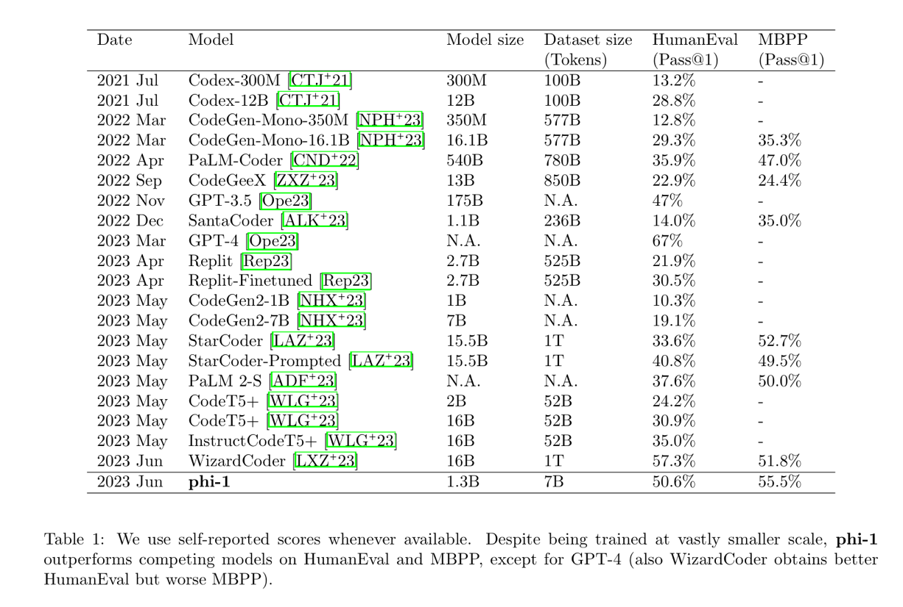
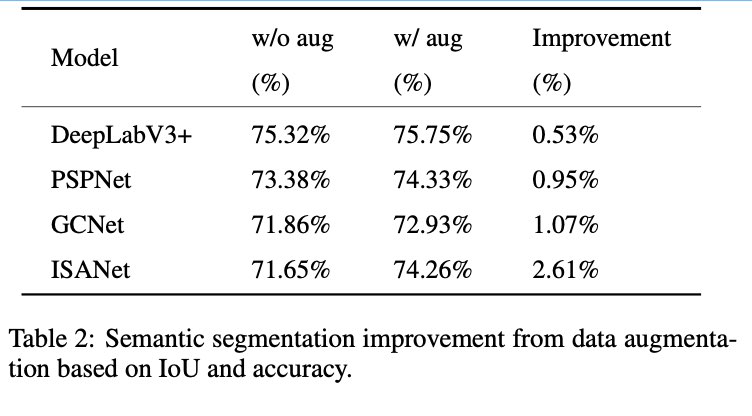
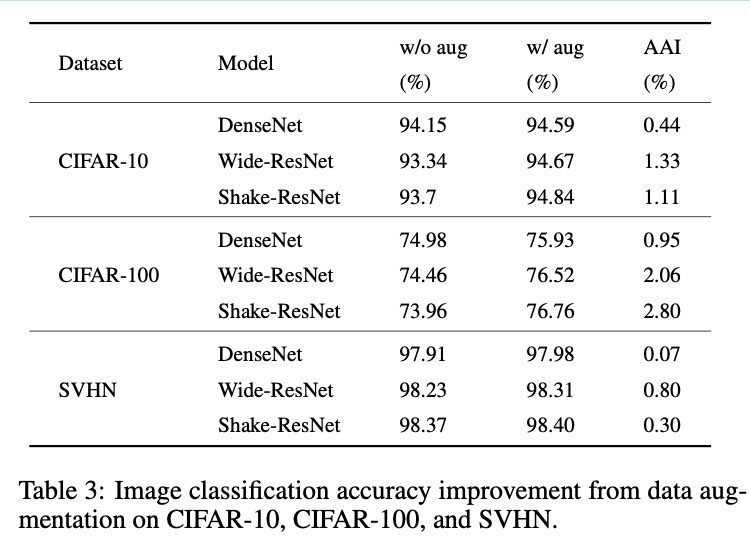
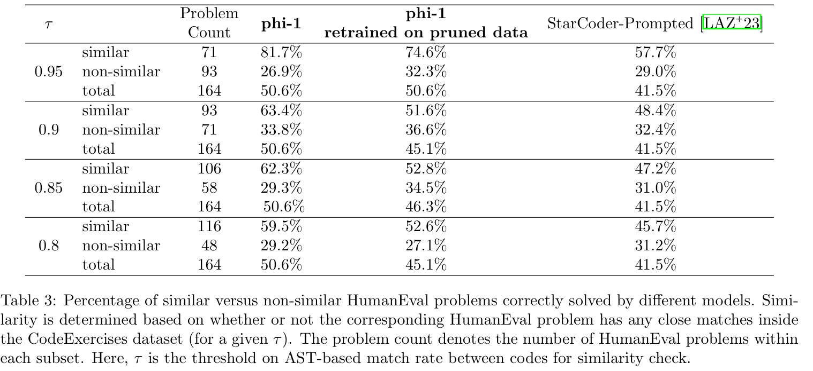

Image Data Augmentation Survey¶
Introduction¶
- sufficient open datasets like Imagenet [Russakovsky et al., 2015], MS-COCO [Lin et al., 2014] and PASCAL VOC [Everingham et al., 2015] are crucial to the development of deep learning models.
- imbalance among the developments of these three perspectives
- The core idea of data augmentation is to improve the sufficiency and diversity of training data by generating synthetic dataset
- The augmented data can be regarded as being extracted from a distribution that is close to the real one
- augmented dataset can represent more comprehensive characteristics
- data augmentation methods are tasks-independent
- Because the operations are performed on the image data and labels at the same time, and the label types are different under different tasks, the data augmentation methods for object detection task can not be directly applied to semantic segmentation task

- it is meaningful to apply basic image manipulations only under the assumption that the existing data obeys the distribution close to the actual data distribution.
- some basic image manipulation methods, such as translation and rotation, suffer from the padding effect
- , some areas of the images will be moved out of the boundary and lost
-
Therefore, some interpolation methods will be applied to fill in the blank part. Generally, the region outside the image boundary is assumed to be constant 0, which will be black after manipulation.
Semantic Segmentation¶
- PASCAL VOC

Image Classification¶

Object Detection¶

Discussion for Future Directions¶
- lack of theoretical research on data augmentation
- some methods can improve the accuracy, but we do not fully understand the reasons behind, such as pairing samples and mixup
- To human eyes, the augmented data with pairing samples and mixup are visually meaningless
- no theory on the size of sufficient training datasets
- The size of the dataset suitable for tasks and models is usually designed based on personal experience and through extensive experiments
- no unified metrics
- saturate the minority class and cause overfitting
- Ultimately, we expect generated data can simulate distribution similar with training data while diversity never losses.
- increase in the amount of training data is not exactly proportional to the increase in the performance
- When a certain amount of data is reached, continue to increase the data without improving the effect.
- despite the increase in the number of data, the diversity of data remains unchanged
- Since various data augmentation can be combined together to generate new image data, the selection and combination of data augmentation techniques are critical
- how to choose and combine methods is a key point when performing data augmentation